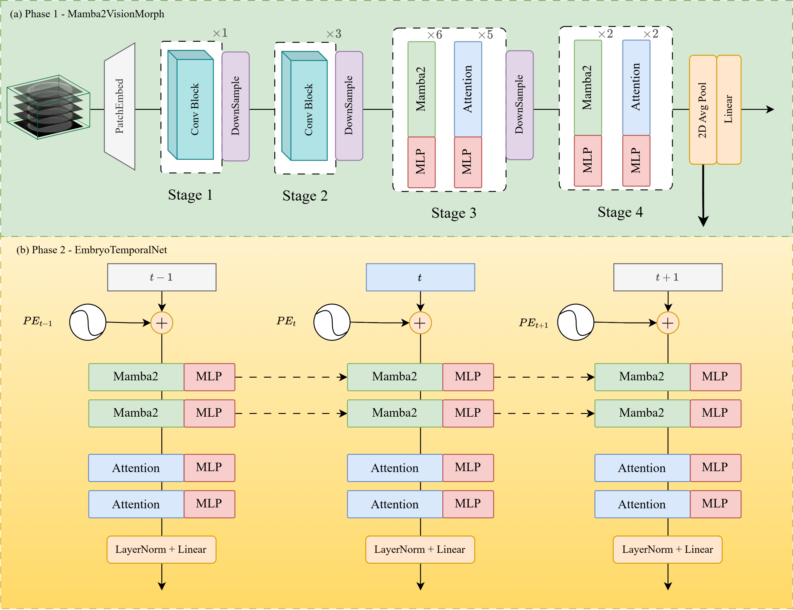
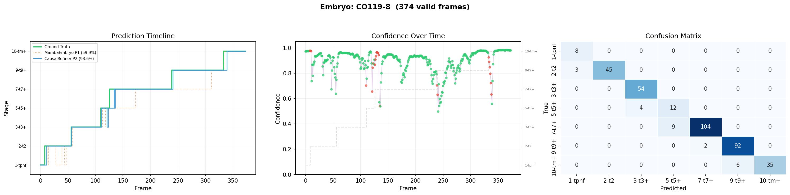

Authors & Affiliations
1. University of Information Technology,
Ho Chi Minh City, Vietnam
2. Vietnam National University,
Ho Chi Minh City, Vietnam
Abstract
Time-Lapse Imaging (TLI) technology has brought significant advancements to In Vitro Fertilization (IVF), providing abundant non-invasive data on embryo morphokinetics.
Despite this, analyzing this vast amount of frame video data remains largely dependent on manual observation by clinicians, leading to subjective assessments and time-consuming processes. To address this challenge, our study proposes a two-stage deep learning system, comprising Mamba2VisionMorph and EmbryoTemporalNet, specifically designed for recognizing seven human embryo cell division stages.
A core distinction of this research lies in the application of a rigorous patient-wise data splitting strategy, which completely eliminates the risk of data leakage during the testing phase. Experimental results on an independent test set of 70 raw time-lapse video sequences (21,264 labeled frames) show that the model achieves a Top-1 accuracy of 81.26% and a Top-3 accuracy of 98.81%, with a Macro F1 of 0.798 and a Weighted F1 of 0.811.
The system performs well in classifying stages such as t2 (F1 = 0.910) and tM+ (F1 = 0.869). Furthermore, through the Grad-CAM visualization technique, the research demonstrates the model's ability to identify core morphological changes and filter out optical noise, thereby overcoming the limitations of static image assessment methods. The combination of high accuracy and inference transparency makes the proposed system an objective consultation tool, contributing to the standardization and quality improvement of clinical embryo assessment processes.
Sample Analysis: CO119-8
469 time-lapse frames capturing complete embryo development from pronuclear stage through morula and blastocyst, with AI-predicted stage boundaries.

Embryo Development Viewer
469 frames · 13 morphokinetic stages
Current Stage
tPB2
Frame 5 – 24
Embryo Development Time-Lapse
Sample CO119-8 · 469 frames captured over ~5 days

GradCAM Attention Maps
Gradient-weighted Class Activation Mapping shows where the model focuses when predicting each stage. Warmer colors = higher attention.
Stage Prediction Results
Softmax probabilities per frame from trained spatio-temporal classifier
